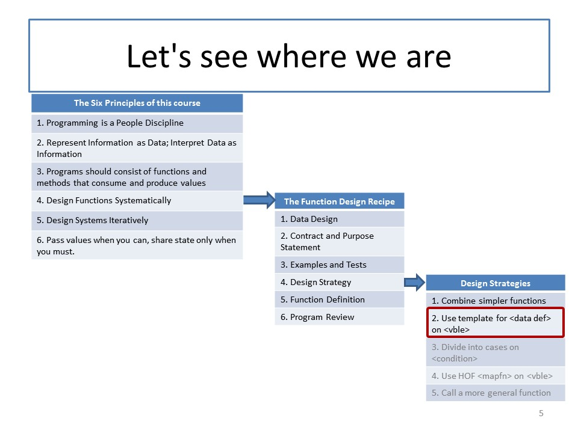

CS 5010: Module 02
Module Overview
This week will be largely devoted to the Use Template strategy, which is the design recipe you will use most often in this course. We will also talk about the Divide Into Cases strategy, about testing, and give you a checklist for reviewing and polishing your program before you turn it in. This completes our survey of the Function Design Recipe. You will also review Racket's facilities for producing images and scenes.
Course Map

Here's another view that shows where we are in the course:
Readings
Read the Prologue and Part I from our textbook, which introduce you to programming in Racket's Basic Student Language, using fixed-size data.
Resources
- Examples for Module 02
- 02-7-ball-after-mouse-with-tests.rkt is an especially good example for you to study
- Early testing helps in industry. (Note that early testing is not the same as test-driven design.)
Lessons
- Lesson 2.1: Design Strategies 2: Using a Template
- Guided Practice 2.1
- Lesson 2.2: Design Strategies 3: Dividing into Cases
- Lesson 2.3: Examining Two Pieces of Data
- Guided Practice 2.2
- Lesson 2.4: Testing
- Lesson 2.5: Program Review
- Lesson 2.6: Working with Images and Scenes
Problem Set
Problem Set 02 was assigned on Monday, 23 January.